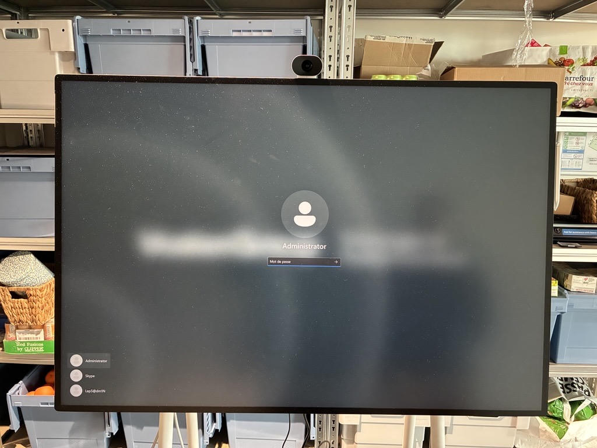
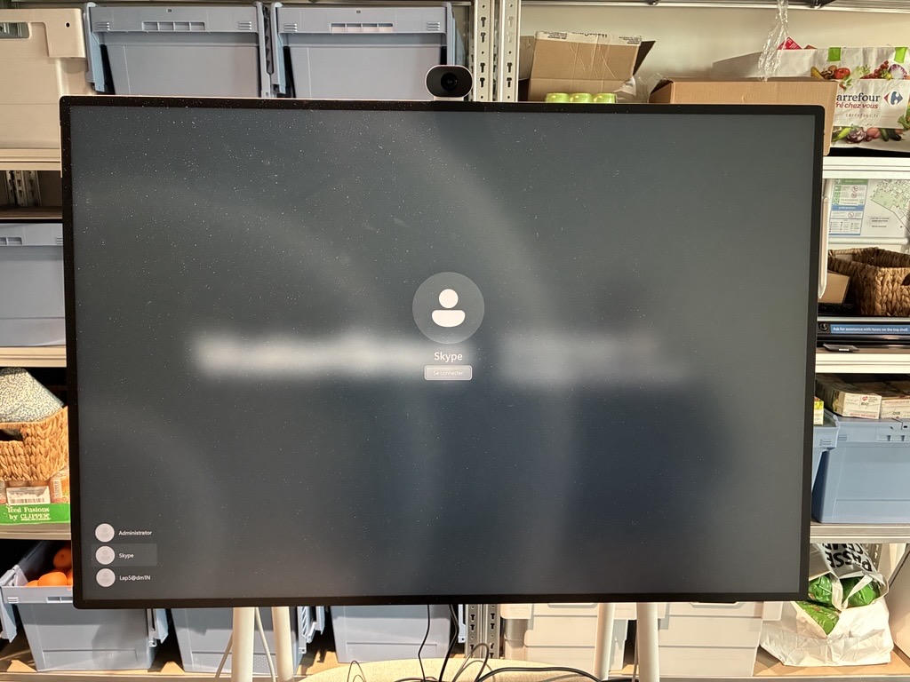
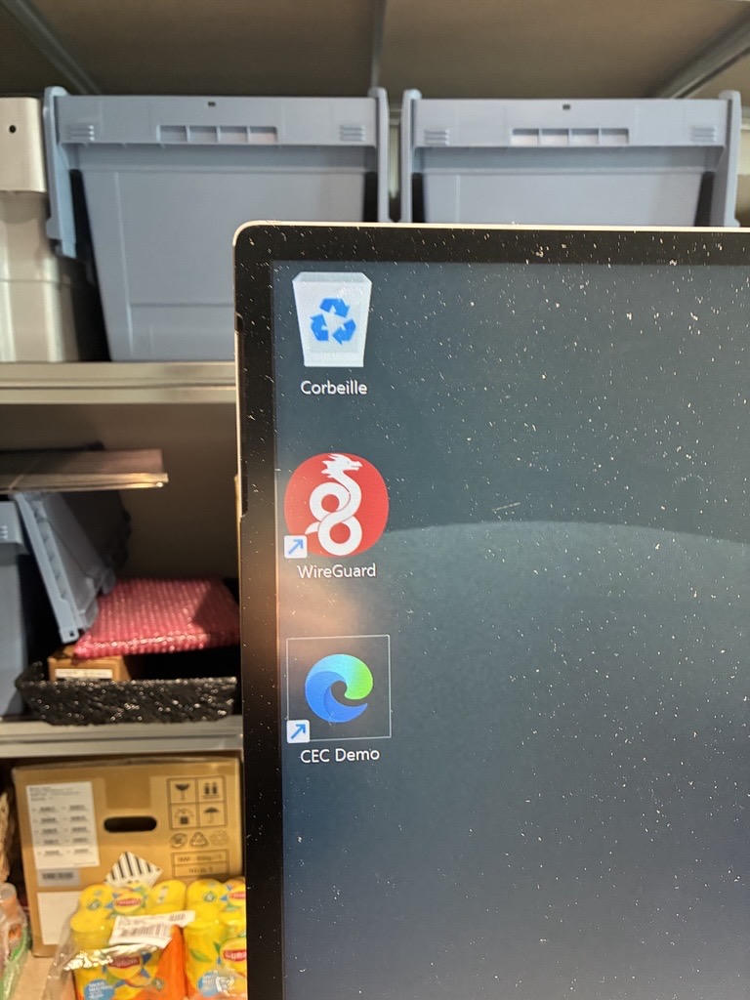
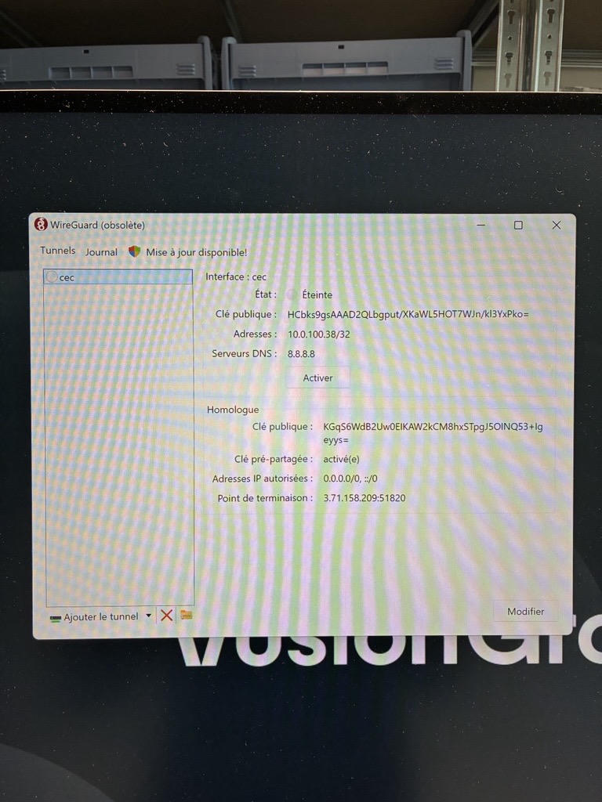
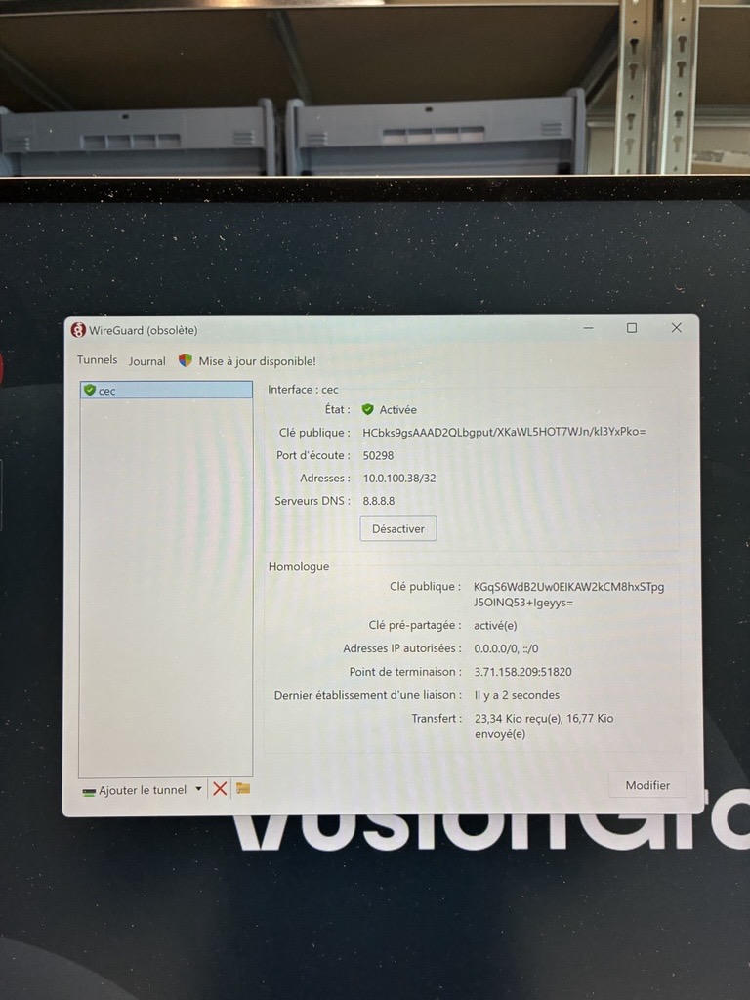
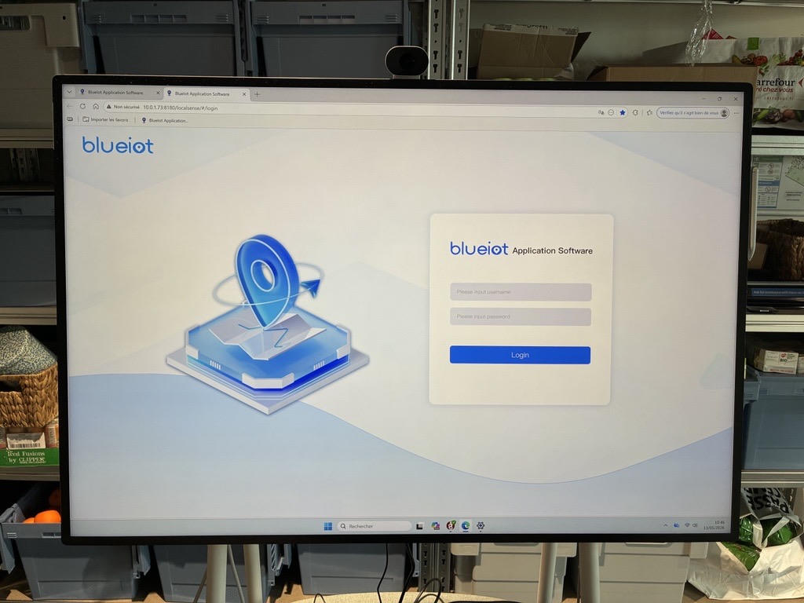
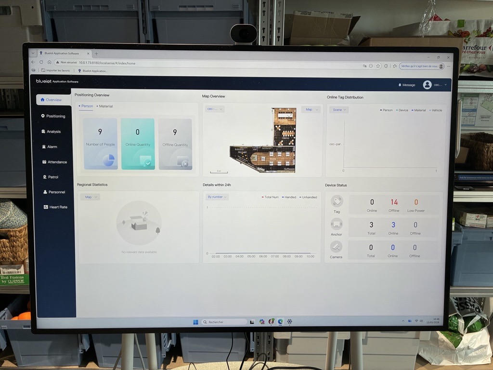

Mission 1
Présentation et intervention sur la Surface Hub
1. Présentation générale
La Surface Hub est un dispositif collaboratif interactif conçu pour les environnements professionnels. Elle permet l’organisation de réunions Microsoft Teams, le partage de contenu, la collaboration en temps réel ainsi que l’utilisation d’applications professionnelles sur un grand écran tactile interactif.
Le modèle utilisé au sein de l’entreprise est installé sur un support mobile équipé d’une batterie APC intégrée. Cette batterie joue le rôle d’onduleur, aussi appelé UPS, et permet d’assurer la continuité de fonctionnement en cas de coupure électrique ; de déplacer la Surface Hub d’une salle à une autre sans interruption ; de sécuriser les réunions et les sessions en cours.
La batterie APC doit rester alimentée et activée en permanence afin de garantir le bon fonctionnement de l’équipement.
2. Contexte de l’intervention
Dans le cadre de mon alternance chez VusionGroup, j’ai été sollicité afin d’intervenir sur une Surface Hub rencontrant un dysfonctionnement.
Le problème constaté concernait l’alimentation et le fonctionnement général de l’équipement. La Surface Hub ne réagissait plus correctement et la batterie APC ne semblait plus assurer son rôle de relais électrique.
L’objectif de l’intervention était donc :
- d’identifier l’origine du problème ;
- de vérifier l’état de fonctionnement de la batterie APC ;
- de contrôler les branchements électriques ;
- de remettre la Surface Hub en état de fonctionnement ;
- de garantir la disponibilité de l’équipement pour les réunions et les démonstrations professionnelles.
Cette intervention m’a permis de réaliser un diagnostic matériel et électrique complet sur un équipement collaboratif utilisé quotidiennement dans un environnement professionnel.
Suite à cette intervention, ma tablette CEC disposera de deux fonctionnalités principales :
- permettre aux utilisateurs de l’utiliser lors des réunions Teams ;
- permettre aux équipes marketing de réaliser des démonstrations de leur nouvelle solution Vusion.
Avec l’aide de l’équipe réseau, nous allons également mettre en place des solutions permettant l’accès à un site externe via un VPN directement depuis la Surface Hub. Cette configuration offrira une démonstration plus intuitive et fluide pour la personne en charge de la présentation, tout en améliorant l’expérience des clients lors des démonstrations.
3. Fonctionnement électrique et câblage de la Surface Hub
3.1. Fonctionnement du module APC et rôle des câbles
Dans le compartiment inférieur du support mobile se trouve le module APC. Celui-ci possède deux connexions électriques principales : un câble INPUT et un câble OUTPUT. L’ensemble de l’alimentation électrique de la Surface Hub passe obligatoirement par cette batterie APC.
Câble INPUT : alimentation secteur
Le câble INPUT correspond au câble branché directement sur la prise murale. Son rôle est d’alimenter la batterie APC, de permettre sa recharge et d’assurer indirectement l’alimentation de la Surface Hub lorsque le secteur est disponible. Sans ce câble, la batterie ne peut plus se recharger ni maintenir l’alimentation du dispositif.
Câble OUTPUT : alimentation de la Surface Hub
Le câble OUTPUT relie directement la batterie APC à la Surface Hub. Son rôle est d’alimenter la Surface Hub lorsque le secteur fonctionne et de transmettre automatiquement l’alimentation de secours de la batterie APC en cas de coupure électrique.
La Surface Hub n’est donc jamais branchée directement sur une prise murale. Toute son alimentation passe obligatoirement par la batterie APC.

3.2. Vérifications réalisées lors de l’intervention
Afin d’identifier l’origine du dysfonctionnement, plusieurs contrôles ont été effectués, notamment la vérification de l’état général de la batterie APC, le contrôle des voyants lumineux, la vérification du branchement du câble INPUT ainsi que du câble OUTPUT reliant la batterie à la Surface Hub. L’alimentation secteur et le fonctionnement général de l’équipement ont également été testés.
Après analyse, le problème provenait du système d’alimentation de la batterie APC, empêchant la Surface Hub de fonctionner correctement. Une fois les vérifications réalisées et les branchements contrôlés, l’équipement a pu être remis en fonctionnement.
Les câbles présents dans la batterie étaient défectueux. Cependant, afin d’assurer le bon fonctionnement global de la Surface Hub, il est indispensable de disposer de câbles fonctionnels pour garantir le fonctionnement de la boucle d’alimentation. Cela comprend notamment le câble d’alimentation directement branché à la prise murale ainsi que le câble « Power Boot » connecté au Hub. Sans ces éléments, la batterie APC ne pourra ni assurer la continuité de l’alimentation électrique ni protéger correctement l’équipement en cas de coupure.


3.3. Batterie APC : fonctionnement et indicateurs
La batterie APC se situe dans la partie inférieure du support mobile. Un bouton d’alimentation présent sur la face extérieure permet d’allumer ou d’éteindre la batterie si nécessaire. Afin de garantir la continuité électrique et le bon fonctionnement de la Surface Hub, cette batterie doit rester activée en permanence.
La batterie dispose également de cinq voyants lumineux permettant d’indiquer son niveau de charge. Lorsque les cinq voyants sont allumés, cela signifie que la batterie est entièrement chargée et opérationnelle. Si moins de cinq voyants sont visibles, la batterie est partiellement chargée. En revanche, l’absence totale de voyants peut indiquer que la batterie est éteinte ou complètement déchargée.
Procédure de vérification en cas de dysfonctionnement
En cas de problème électrique ou si la batterie ne prend plus le relais :
- vérifier que la batterie APC est allumée ;
- vérifier la présence des voyants lumineux ;
- contrôler le branchement du câble INPUT ;
- vérifier la connexion du câble OUTPUT ;
- contrôler la présence d’alimentation secteur.


3.4. Fonctionnement en cas de coupure de courant
En cas de coupure électrique, la batterie APC permet de maintenir l’affichage de la Surface Hub, d’assurer la continuité des réunions en cours et de déplacer l’équipement sans provoquer d’arrêt brutal du système. Ce fonctionnement garantit la stabilité ainsi que la disponibilité de la Surface Hub dans un environnement professionnel.
3.5. Autonomie
Lorsque la batterie APC est entièrement chargée, l’autonomie moyenne constatée est d’environ deux heures dans le cadre d’une utilisation classique en réunion.
4. Préparation de la Surface Hub pour une démonstration CEC
Cette procédure a pour objectif de préparer correctement la Surface Hub afin de lancer une démonstration CEC, puis de remettre l’équipement dans son état de fonctionnement normal une fois la démonstration terminée.
Le respect des différentes étapes est essentiel afin d’éviter tout dysfonctionnement du mode réunion Teams.
5. Préparation de la Surface Hub
Étape 1 – Connexion du clavier
Avant toute manipulation, un clavier doit être connecté à la Surface Hub. Une fois le clavier branché, il est nécessaire d’appuyer cinq fois sur la touche Windows afin d’accéder à l’écran de sélection des sessions.

Étape 2 – Sélection du compte Administrator
Depuis l’écran de connexion, sélectionner le compte Administrator. Ce compte permet d’accéder à l’environnement Windows nécessaire à la démonstration.

Étape 3 – Authentification
Après avoir sélectionné le compte Administrator, saisir le mot de passe communiqué par les personnes responsables de l’équipement.
Étape 4 – Accès à l’environnement Windows
Une fois connecté, la Surface Hub fonctionne comme un poste Windows classique. L’environnement de démonstration peut alors être préparé.
6. Activation du VPN WireGuard
Étape 1 – Ouverture de WireGuard
Depuis le bureau Windows, ouvrir l’application WireGuard à l’aide du raccourci présent sur le bureau.

Étape 2 – Activation du VPN
Dans l’application WireGuard, cliquer sur le bouton « Activer » afin d’établir la connexion VPN.

Étape 3 – Vérification de la connexion
Lorsque le statut affiché est « Activée », cela signifie que la connexion VPN est correctement établie et que la Surface Hub est connectée à l’environnement nécessaire à la démonstration.

7. Lancement de la démonstration CEC
Étape 1 – Ouverture de la démonstration
Depuis le bureau Windows, ouvrir le raccourci Microsoft Edge nommé « CEC Demo ».

Étape 2 – Connexion à l’application
Une page de connexion apparaît à l’écran. Il convient de renseigner les identifiants nécessaires puis de se connecter à l’application. Dans certains cas, les informations d’authentification peuvent déjà être enregistrées automatiquement.
Étape 3 – Vérification de la démonstration
Une fois connecté, vérifier que l’interface de démonstration s’affiche correctement et que l’environnement est prêt à être utilisé.

8. Fin de démonstration – Retour au mode Teams
Attention : étape obligatoire
À la fin de la démonstration, la Surface Hub doit impérativement être remise dans son état de fonctionnement normal.
Sans cette procédure, l’équipement peut devenir indisponible pour les réunions Teams.
Étape 1 – Fermer la démonstration
Fermer ou réduire la fenêtre de démonstration afin de revenir sur le bureau Windows.
Étape 2 – Désactivation du VPN
Ouvrir WireGuard puis cliquer sur : Désactiver. Vérifier que le statut n’est plus affiché comme « Activée ».
Étape 3 – Retour à la session Skype / Teams
Effectuer ensuite les actions suivantes :
cliquer sur l’icône Windows ;
sélectionner le compte Administrator ;
choisir la session Skype / Teams.
La Surface Hub revient alors dans son mode de fonctionnement normal.